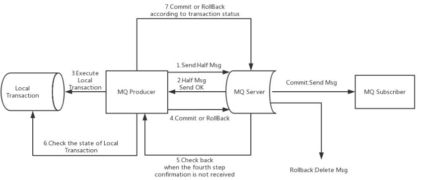
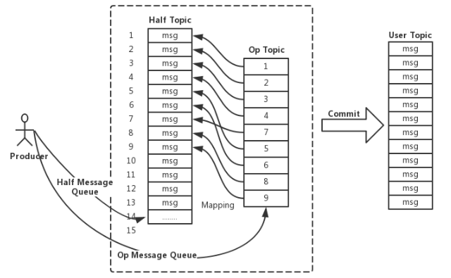

RocketMQ事务消息
1. 事务消息的引入
当本地事务和发消息逻辑捆绑在一起的场景，普通消息可能导致逻辑不一致的问题。
例如下单成功后给客户发送短信，短信平台是单独的服务，将修改订单状态和发送消息组合成一个事务，下单成功后发送消息，如果消息发送失败，则回滚事务。由于网络阻塞，消息可能发送成功，而 Broker 的确认超时了，客户端认为消息没有成功，回滚了本地事务，下单未成功。但 Broker 已经存储了消息，导致消费者执行了发送短信的业务，出现给用户发送了短信但下单却没成功的情况。
RocketMQ 在 4.3.0 版本引入事务消息，事务消息将本地事务和发送消息定义到全局事务中，实现分布式事务的最终一致性，解决了上述问题。
2. 使用事务消息
当使用事务消息，核心是实现 TransactionListener 接口。
1 | public interface TransactionListener { |
下面是官方给出的 demo：
1 | public class TransactionListenerImpl implements TransactionListener { |
3. 事务消息的实现
RocketMQ 使用 2PC 的思想来实现事务消息，官方的流程图如下。

事务消息主要分为两个流程：事务消息的发送及提交、补偿流程。
发送与提交
客户端发送半消息；
Broker 响应半消息写入结果；
客户端根据响应执行本地事务，发送结果；
Broker 根据结果执行 Commit 或者 Rollback；
补偿流程
对没有 Commit/Rollback 的事务消息，Broker 发起一次回查；
客户端收到回查消息，检查对应本地事务的状态；
Broker 根据本地事务状态，重新 Commit 或 Rollback。
半消息
事务消息与普通消息最大的不同，就是引入了半消息的机制。半消息对消费端是不可见的，Broker 收到半消息后，会替换 topic 为特定的 RMQ_SYS_TRANS_HALF_TOPIC，此时消费端无法获取这个消息。Broker 会开启一个定时任务，从 RMQ_SYS_TRANS_HALF_TOPIC 的队列中拉取消息，根据客户端本地事务状态提交或回滚消息。
当二阶段为提交消息时，会根据半消息恢复出普通消息，走一遍消息写入流程。
Op消息
在收到半消息并写入 CommitLog 之后，当前消息的状态是未知的，需要一个操作来标识这条消息的最终状态。RocketMQ 引入了 Op 消息的概念，用 Op 消息标识事务消息已经确定的状态（Commit 或者 Rollback）。如果消息还没有 Op 消息，那么该事务消息的状态便是未知的。
在上文 RocketMQ的消息存储 中提到，消息是顺序写入到 CommitLog 的，不会出现删除 CommitLog 中某个消息的情况。故二阶段 Commit 相对于 Rollback 操作只是在写入 Op 消息前创建半消息的索引。

处理二阶段失败的消息
如果在事务消息的二阶段过程中失败了，例如在 Commit 时，出现网络问题导致失败，那么需要通过一定的策略使这条消息最终被 Commit。RocketMQ 采用了一种称为回查的补偿机制。
Broker 对未确定状态的消息（通过对比半消息和 Op 消息）发起回查，将消息发送到对应的 Producer 端，Producer 检查本地事务的状态，进而 Broker 执行 Commit 或者 Rollback。如果回查超过 15 次还无法得知事务状态， Broker 将回滚该消息。
RocketMQ 的事务消息保证了生产者本地事务完成之后，一定会把消息发送给 Broker，但无法实现完全的分布式事务。例如 A 给 B 转账 200，本地事务中更改存款，发送事务消息成功，但之后 B 账户直接注销，消费者拉取到消息时发现无法转账，需要进行回滚，此时只能依靠消息队列再发送一条 转账回滚 的消息，这里就会引入不可靠性。这种场景出现的概率是比较低的，但在一致性要求很高的场景，需要依赖 TCC 等实现。